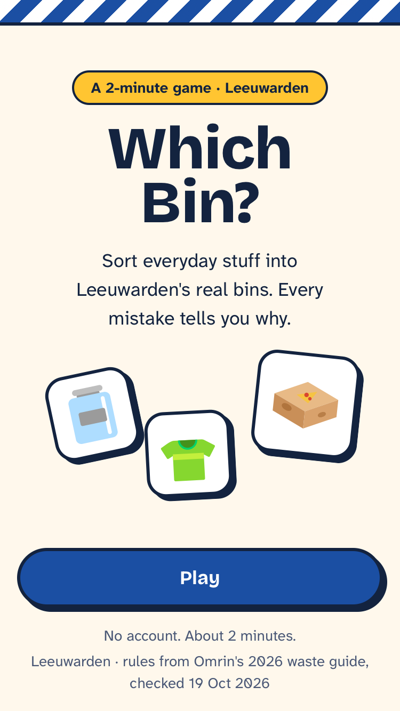
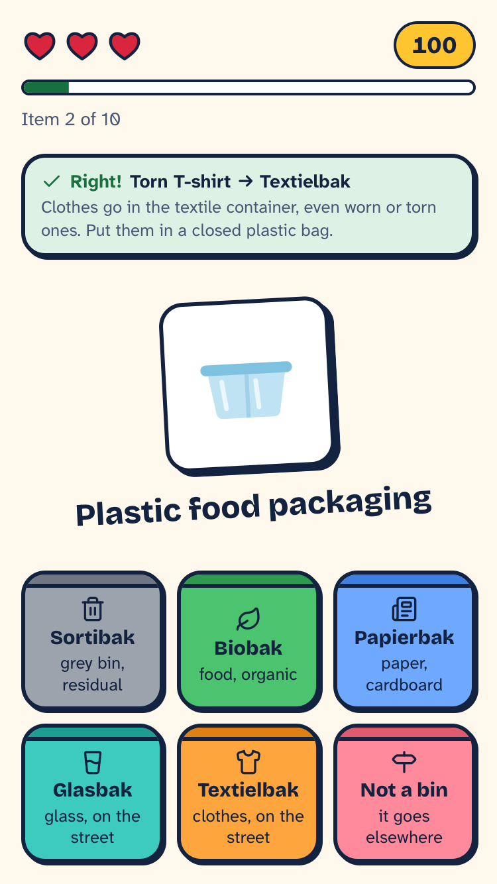
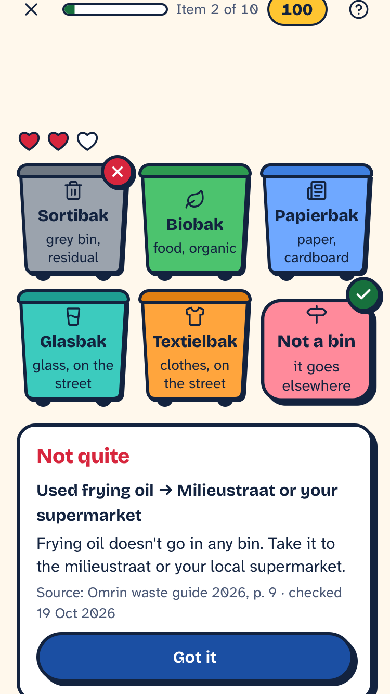

Brand book · draft v1 · 19 Oct 2026
Which Bin?
A sticker pack from Friesland. Bold, outlined, slightly tilted stickers make it feel like a game. The blue stripes and red pompeblêden of the Frisian flag root it in Leeuwarden.
For international students in Leeuwarden
Tokens app/src/styles/tokens.css
Why this direction
Two ideas, chosen after the first user test.
Sticker game
Testers said it felt "more app than game"
The grey wireframes looked like a form. Stickers with thick outlines, hard shadows and a slight tilt look like something you play with. They also move well: an item flies into a bin, a heart drops off.
Frisian local
The rules belong to one city
Leeuwarden's bins are not Amsterdam's. The Frisian flag gives the game local roots: its diagonal blue stripes as a band, its red pompeblêd as the life heart you lose on a wrong answer.
What we don't use
No Omrin or municipality logos: the game uses their rules, with sources, but doesn't imitate them. No bin colours Omrin hasn't confirmed: only the Sortibak is officially grey.
Colour
Seven brand colours on a cream page, never plain white. Every text pair below was measured; all text passes WCAG AA (4.5:1).
Bin tints
These are game colours, not Omrin's lid colours. The icon and the Dutch name carry the meaning; the tint only helps tell six cards apart. Real lid colours are a question for Omrin.
Type
Two families, self-hosted in the app. A loud one for the game, a calm one for the rules.
Round 1
9 / 10
Bricolage Grotesque, ExtraBold
Titles, scores, bin names and buttons. Chunky and a bit quirky, so headings feel like stickers too.
Glass jars go in a shared glass container near you, not a bin at home.
Atkinson Hyperlegible Next, Regular and Bold
Explanations and everything else you read. Made by the Braille Institute so similar letters (I, l, 1) can't be confused: good for people reading in a second language.
The sticker
One shape does most of the work: cards, bins, items and buttons are all stickers.
Anatomy
- 3px ink outline
- Hard shadow, 4px right and down, no blur (2px on small parts)
- 18px corners on cards, fully round buttons
- Item stickers tilt 2 to 3 degrees, like they were stuck on by hand
- Used by role: not every block on a screen is a sticker
Frisian motifs
Two parts of the Frisian flag, each with one job.
The stripe band
Diagonal blue and white stripes across the top of the start and score screens. It marks the beginning and end of a game, nothing else.
The pompeblêd heart
Three per round. A wrong bin empties one.
The six targets
Dutch names as they're printed on the street, an English hint, and an icon. A 3 × 2 grid keeps all six in thumb reach.
From test 1
"On the street" is part of the name
Testers didn't know where glass goes. In Leeuwarden it isn't a bin at home at all: glass and textiles go in shared containers near you (Omrin guide, pp. 6–7). The hint says so on the card itself.
Item stickers
Flat, friendly item art inside a white sticker. One rule above all: the picture must never teach the wrong bin.
11 items use Microsoft's Fluent Emoji (flat style, MIT licence). Where an emoji would teach the wrong bin, we drew our own in the same flat style. A unit test fails if any item in the game has no sticker.
In the game
Screens from the build at iPhone SE size (375 × 667).



Motion
Quick and springy, only where it tells you something happened. With "reduce motion" switched on, everything fades instead.
| Moment | Motion | Time | Status |
|---|---|---|---|
| New item | Sticker pops in from small, settles at its tilt | spring, about 300ms | Built |
| Right answer | Sticker drops away toward the bins, green card slides in | 250ms | Built |
| Wrong answer | Sheet slides up; a heart empties | about 300ms | Built |
| Tap a button | Presses into its shadow | 150ms | Built |
| Drag an item | Sticker lifts with a bigger shadow, bins light up under it | follows the finger | Next |
| Round end | Score counts up; pompeblêd confetti on a perfect round | under 1s | Next |
Voice
Friendly, direct, plain English for people who read it as a second language. Dutch bin names stay Dutch, because that's what's printed on the street.
Not quite
A mistake is part of learning, not a failure.
Wrong!
Shames the player; tells them nothing.
Glass jars go in a shared glass container near you.
Says where, in words from Omrin's English guide.
Dispose of glass in the designated receptacle.
Official, vague and hard to read.
Always
- Text at least 4.5 : 1 against its background; hints at least 13px.
- Never colour alone: right and wrong always come with words and an icon.
- Tap targets at least 44px; the bins are 72 to 96px tall.
- Every rule shows Omrin's page number and the date it was checked.